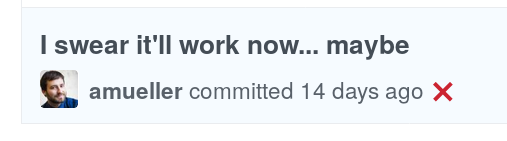

Two weeks ago, we held a scikit-learn sprint in Austin and Paris. Here is a brief report, on progresses and challenges.
Several sprints
We actually held two sprint in Austin: one open sprint, at the scipy conference sprints, which was open to new contributors, and one core sprint, for more advanced contributors. Thank you to all who joined the scipy conference sprint. As I wasn’t there, I cannot report on it.
Many achievements
Too many things were done to be listed here. Here is brief overview:
- Optics got merged: The optics clustering algorithm is a density-base clustering, as DBScan, but with hyperparameters more flexible and easier to set. Our implementation is also more scaleable for very large number of samples. The Pull request was opened in 2013, and got many many improvements over the years.
- Yeo-Johnson: The Yeo-Johnson transform is a simple parametric transformation of the data that can be used to make it more Gaussian. It is similar to the Box-Cox transform but can deal with negative data (PR).
- Novelty versus outlier detection: Novelty detection attempts to find on new data observations that differ from train data. Outlier detection considers that even in the train data there are aberrant observation. New modes in scikit-learn enable both usage scenario with the same algorithms (see this issue and this PR).
- Missing-value indicator: a new transform that adds indicator columns marking missing data (PR).
- Pypy support: pypy support was merged. (PR).
- Random Forest with 100 estimators The default of n_estimator in RandomForest was changed from 10, which was fast but statistically poor, to 100 (PR).
- Changing to 5-fold: we changed to default of cross-validation from 3-fold to 5-fold (PR).
- Toward release 0.20: most of the effort of the sprint was actually spent on addressing issues for the 0.20 release: a long list of quality improvements (milestone).
Scikit-learn is hard work

Even for the almighty @amueller
Two days of intense group work on scikit-learn reminded me how much it is hard work. I thought that it was maybe a good idea to try to illustrate why.
- Mathematical errors: maintaining the library requires mathematical understanding of the models. For instance Ivan Panico fixed the sparse PCA, for which the transform was mathematically incorrect.
- Numerical instabilities: sometimes, however, when models give a result different from the expected one, this is due to numerical instability. For instance, Sergul Aydöre changed the tolerance for certain variants of ridge
- Keeping examples and documentation up to date: Each change requires changing all documentation and examples. We have a lot these. For instance, Alex Boucault had to update many examples and documentation pages when changing the default cross-validation.
- Clean deprecation path: We make sure that our changes do not break users code, and therefore we provide a smooth update path, with progressive deprecations. For instance, the change of default cross-validation introduce an intermediate step where the default is kept the same and warns that it will change in two releases.
- Consistent behavior across the library: One of the acclaimed values of scikit-learn is that it has a very consistent behavior across different models. We enforce this by “common tests”, that test some properties of the estimators altogether. For instance, Sergul implemented common tests for sample weights.
- Extensive testing: We test many many things in scikit-learn: that the code snippets in the documentation are correct, that the docstring conventions are respected, that there are no deprecation errors raised, including from our dependencies. As a results, continuous integration is a core part of our development. During the sprint, we flooded our cloud-based continuous integration, and as a result iteration really slowed down. TravisCI were kind enough to fix this by allocating us freely more computing power.
- Supporting many versions: Least by not least, one constraint that makes development hard with scikit-learn is that we support many different versions of Python, of our dependencies, of linear-algebra libraries, and of operating system. This makes development harder, and continuous integration slower. But we feel that this is very valuable for a core library: narrowing the supported versions means that users are more likely to end up in unsatisfiable dependencies situations, where different parts of a project want different version numbers of a dependency.
Warning
Dropping support for Python 2
Supporting many version slows development. It also prevents implementing new features: supporting Python 2 makes it harder to provide better parallelism or traceback management.
Python 3 has been out for 10 years. It is solid and comes with many improvements over Python 2. Alongside with many other projects, we will be requiring Python 3 for the future releases of scikit-learn (0.21 and later). scikit-learn 0.20 will be the last release to support Python 2. It will enable us to develop faster a better toolkit.
Credits and acknowledgments
Contributors to the sprint
In Paris
- Albert Thomas, Huawey
- Alexandre Boucaud, Inria
- Alexandre Gramfort, Inria
- Eric Lebigot, CFM
- Gaël Varoquaux, Inria
- Ivan Panico, Deloitte
- Jean-Baptiste Schiratti, Telecom ParisTech
- Jérémie du Boisberranger, Inria
- Léo Dreyfus-Schmidt, Dataiku
- Nicolas Goix
- Samuel Ronsin, Dataiku
- Sebastien Treguer, Independent
- Sergül Aydöre, Stevens Institute of Technology
In Austin
- Andreas Mueller, Columbia
- Guillaume Lemaître, Inria
- Jan van Rijn, Columbia
- Joan Massich, Inria
- Joris Van den Bossche, Inria
- Loïc Estève, Inria
- Nicolas Hug, Columbia
- Olivier Grisel, Inria
- Roman Yurchak, independent
- William de Vazelhes, Inria
Remote
- Hanmin Qin, Peking University
- Joel Nothman, University of Sydney
Sponsors
- France Is AI payed the travel of the French contributors to Austin
- The NSF and the Sloan foundation payed the travel of the people from Columbia.
- SciPy 2018 organizers (and sponsors) hosted the first part of the sprint in Austin,
- Enthought hosted the second part of the sprint in Austin,
- Dataiku hosted us in Paris
- TravisCI raised our number of workers for online testing
- ParisML meetup helped us with the organization
Thank you all for the support
Also thanks to Andy Mueller and Olivier Grisel for feedback on this blog post.
| [*] | We aspire to treat everybody excatly the same way. However, acknowledging the fact that there is currently a lack of diversity, we are happy to do some outreach and give extra help onboarding newcomers. |
comments powered by Disqus